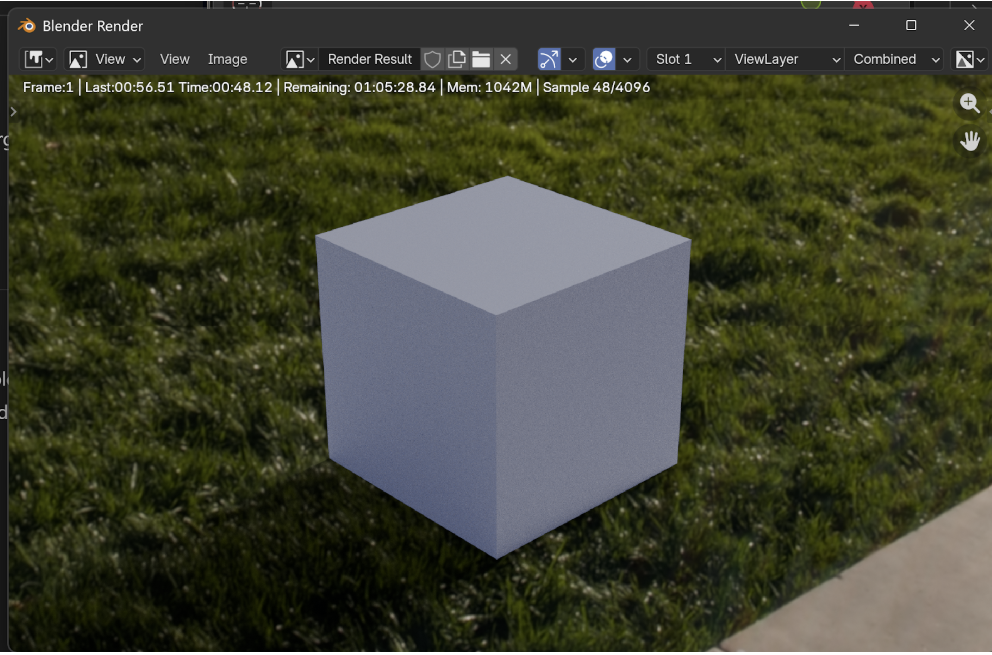
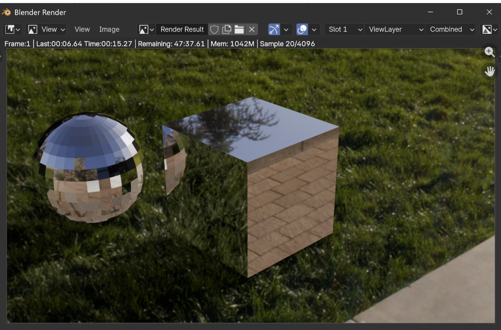
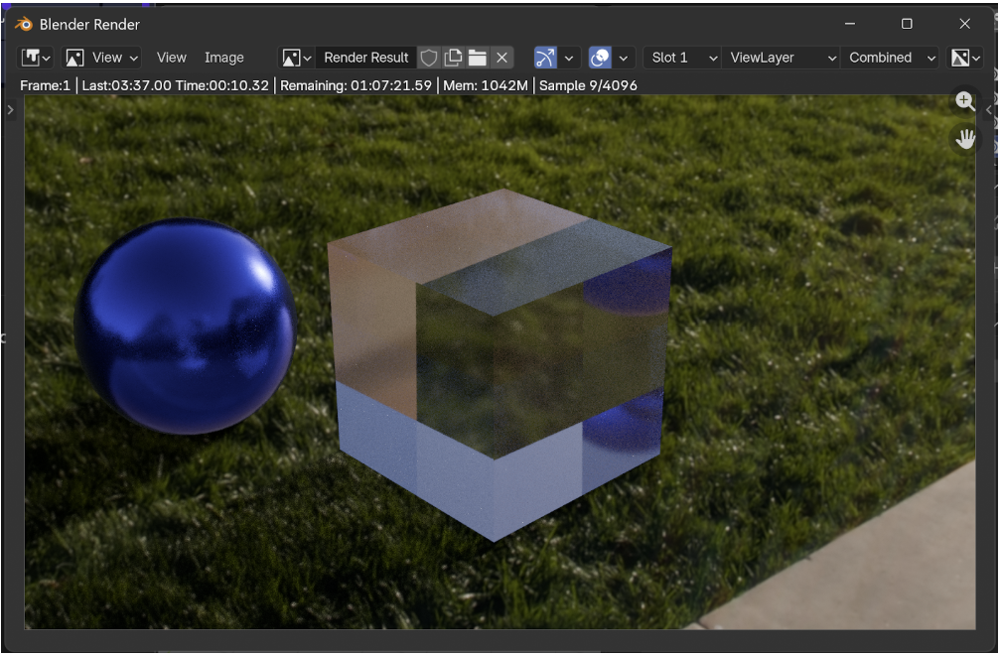
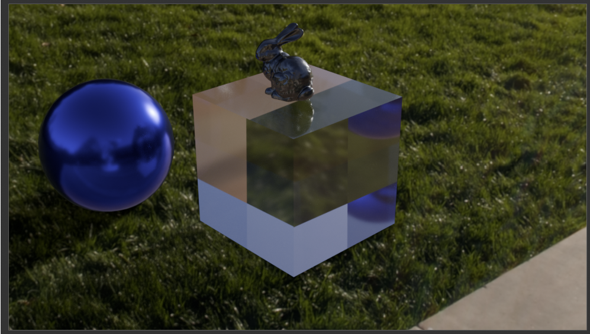

Scene setup — HDR environment and shadow catcher
I started from the default Blender scene and switched the renderer to Cycles. I removed the default point light and replaced it with a 360° HDR panoramic image used as environment lighting.
A large planar quad was added below the objects and set as a shadow catcher. This makes the plane invisible while still receiving shadows, allowing the synthetic objects to blend naturally into the photographed environment.
Exercise 1 — Mirror materials
I added a sphere next to the cube and assigned both objects a Principled BSDF configured to behave like a perfect mirror.
This was achieved by setting the metallic value to 1 and the roughness to 0. The HDR environment is clearly reflected on both objects, demonstrating how environment lighting drives reflections in a physically based renderer.
Exercise 2 — Metallic and glass materials
In this exercise, I modified the materials to produce more realistic appearances. The sphere was turned into a metallic glossy object with a colored base and non-zero roughness, while the cube was changed into a glass material.
The glass cube uses the Principled BSDF with transmission enabled and an index of refraction (IOR) set to 1.5. This produces realistic refraction and reflection effects consistent with physical optics.
Exercise 3 — Imported mesh and final scene
I imported a triangle mesh into the scene and composed a final environment combining multiple objects. Materials were chosen to match the environment lighting and to enhance realism.
To obtain a clean result, I adjusted several Cycles rendering parameters, such as maximum light bounces, samples per pixel, and enabled multiple importance sampling for the HDR environment.
These parameters are crucial to balance render quality and noise, especially in scenes with glass, glossy reflections, and indirect illumination.
Exercise 4 — Cycles vs WebGPU
Using a third-party renderer like Cycles allows very fast production of high-quality images. Complex features such as global illumination, multiple importance sampling, caustics, and physically based materials are readily available and robust.
However, Cycles offers limited control over the internal rendering algorithms. In contrast, a customizable renderer like WebGPU gives full control over ray generation, intersection logic, shading models, and sampling strategies. This makes WebGPU ideal for experimentation and learning.
On the other hand, implementing features such as a full Principled BSDF, efficient path tracing, denoising, or HDR importance sampling would be a significant challenge to reproduce from scratch in WebGPU.